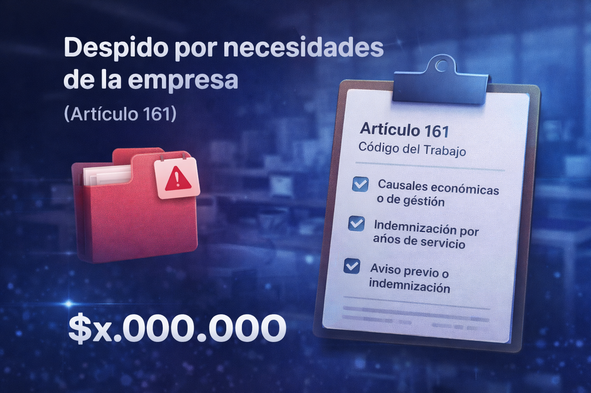

Despido por necesidades de la empresa en Chile (Artículo 161) qué significa y cuánto corresponde
Revisado por Equipo Legal
Basado estrictamente en el Código del Trabajo y Jurisprudencia de la Dirección del Trabajo (2026).

Enfrentar la pérdida de empleo nunca es sencillo, y una de las causales más recurrentes al hablar de despido necesidades empresa Chile es precisamente el despido por necesidades de la empresa, reglamentado por la normativa laboral vigente. Cuando recibes esta noticia, la principal duda es saber cuánto me corresponde de finiquito artículo 161.
El despido por necesidades de la empresa es una de las causales más utilizadas en Chile. Sin embargo, no siempre está correctamente aplicada. Aquí revisamos qué dice la ley y cuándo corresponde indemnización.
El artículo 161 código del trabajo se aplica en distintas reorganizaciones empresariales, recortes presupuestarios o bajas en la productividad que fuerzan a los empleadores a reducir su personal. Aunque es una herramienta legal que las compañías pueden usar, tienen la obligación rotunda de cubrir los pagos asociados: el mes de aviso y tu indemnización por años de servicio si proceden.
A lo largo de esta guía despejaremos todas tus inquietudes respecto a la indemnización artículo 161, daremos ejemplos concretos de montos, y te contaremos qué sucede con tus días de vacaciones. Además, te invitamos a revisar los conceptos técnicos visitando nuestro artículo sobre cómo calcular el finiquito en Chile.
¿Qué dice el Artículo 161 del Código del Trabajo?
El Artículo 161 es una de las opciones que tiene un empleador para poner término al contrato de trabajo de forma unilateral (es decir, aunque tú no quieras renunciar). La ley señala expresamente que este despido debe estar motivado por situaciones objetivas de la compañía, no por culpa del trabajador.
Algunos de los motivos válidos que se describen incluyen:
- Racionalización o modernización: Cuando se cambian procesos, software o maquinarias que suprimen tareas.
- Bajas en la productividad: Disminuciones sostenidas en ingresos o producción que justifiquen cortes.
- Cambios en las condiciones del mercado o de la economía: Como crisis económicas que fuercen recortes financieros profundos en el sector.
Si te interesa leer el desglose normativo exacto, te recomendamos la revisión del Código del Trabajo en Ley Chile (BCN) conforme al artículo 161 vigente. Lo importante que debes entender es que estas "necesidades" deben ser de la empresa, no un pretexto para encubrir un despido injustificado de tu persona.
¿Qué indemnizaciones corresponden por despido de necesidades de empresa?
A diferencia de otras causales por faltas graves a las obligaciones legales, el Artículo 161 te entrega el derecho total a solicitar indemnizaciones en tu finiquito (también buscadas frecuentemente como necesidades de la empresa indemnización). La lista de los pagos que la empresa debe incluir al calcularlo si correspondiera son:
- Indemnización por años de servicio: Es el corazón del finiquito ante esta causal. Recibirás un mes de sueldo por cada año trabajado que tengas y fracción que supere los seis meses. Ten en claro que el tope es de 11 años (y un sueldo tope de 90 UF). Si llevas menos de 1 año trabajando para la compañía, no recibirás este concepto.
- Indemnización sustitutiva de aviso previo: La ley manda a las empresas informarte el despido con una anticipación mínima de 30 días. En la enorme mayoría de los casos no es así y te despiden hoy mismo, obligándolos a sumar el equivalente de un sueldo en el finiquito a modo compensatorio.
- Vacaciones proporcionales y pendientes: Se calculan multiplicando 1.25 días hábiles por cada mes del nuevo año pendiente trabajado, mas todas las vacaciones anteriores que no hayas podido cobrar en tu vida en esa empresa.
- Remuneraciones pendientes: Sueldo u honorarios desde los primeros días del mes hasta tu fecha específica de retiro.
💡 Calcula aquí tu finiquito según tu caso: Si quieres una estimación rápida y automatizada, utiliza nuestra calculadora para calcular tu finiquito en Chile.
Ejemplo real paso a paso para necesidades empresa (Art. 161)
Para ver claro cómo opera esto y tengas la idea de cuánto me corresponde artículo 161, hagamos un caso práctico numérico.
📋 Datos de la simulación:
- Sueldo Bruto / Base a calcular: $1.000.000
- Años de vinculación laboral: 4 años y 6 meses.
- Notificación: Despido inmediato (sin carta 30 días antes).
Desglosemos el cálculo:
1) Años de servicio: Como tienes 4 años y exactamente 6 meses (lo cual no constituye
fracción superior a seis meses), la legislación
indica que se deben pagar un sueldo por cada año y fracción superior a 6 meses. Seis meses
exactos no es "superior" a seis meses. En este ejemplo, te pagan por 4 años.
Cálculo: 4 años x $1.000.000 = $4.000.000.
2) Aviso Previo: Como el despido se notificó ese mismo día. Sumamos otro mes.
Cálculo: $1.000.000.
3) Vacaciones Proporcionales: Este último año, ganaste solo sus 6 primeros meses. 6
meses * 1.25 son 7.5 días hábiles. Al factor transformado (1.4), equivalen a unos 10.5 días
continuos que te deben liquidar a unos $33.333 el día.
Cálculo estimado: ~$350.000.
| Concepto Articulo 161 | Estimación del Monto |
|---|---|
| Indemnización por años de servicio | $4.000.000 |
| Aviso previo (sustitutivo) | $1.000.000 |
| Vacaciones proporcionales (~10.5 d) | $350.000 |
| Total Finiquito Art. 161 referencial: | $5.350.000 |
Diferencia entre Artículo 161 y Artículo 160
Puede sonar confuso si uno lee la "desvinculación y el finiquito", así que la principal clave se reduce a saber la causa. Te dejamos esta tabla para diferenciarlos de inmediato:
| Aspecto | Artículo 161 (Necesidades de la empresa) | Artículo 160 (Causales y faltas graves) |
|---|---|---|
| ¿Hay indemnización años servicio? | Sí, siempre que pase de un año. | No, bajo ninguna circunstancia inicial. |
| ¿Hay aviso previo? | Sí, 30 días o el pago sustitutivo a un sueldo. | No requiere aviso ni mes compensador. |
| ¿Puede impugnarse? | Sí, pidiendo recargos por despido injustificado (30%). | Sí, pero peleando despido indebido para revertirlo a Art. 161. |
¿Se puede reclamar el despido por necesidades de la empresa?
Sí, puedes reclamarlo o impugnarlo (Despido Injustificado). Suele ocurrir que algunas empresas utilizan "necesidades de la empresa" para despedir personas que simplemente no cumplían las metas o porque buscan a alguien cobrando un sueldo más bajo. ¡Eso no son necesidades reales estructuradas por la ley!
Si consideras que la causal es injustificada, la ley otorga un plazo general de 60 días hábiles después del despido para demandar en tribunales laborales. Cabe aclarar que los plazos pueden variar según cada caso particular, por lo que es importante actuar a tiempo. De fallar a tu favor, podrías obtener un recargo del 30% adicional sobre tus años de servicio. Recuerda siempre escribir tu "Reserva de Derechos" al momento de firmar el finiquito.
Preguntas frecuentes sobre el despido por necesidades de la empresa (Art. 161)
¿Siempre pagan indemnización en el Art. 161?
Si el trabajador lleva más de un año en la empresa y no aplica alguna causal justificada diferente antes, el despido por necesidades de la empresa sí otorga el derecho a la indemnización legal por años de servicio, salvo contadas excepciones legales.
¿Qué pasa si llevo menos de un año?
Si llevas menos de un año trabajando y te despiden por necesidades de la empresa, no tienes derecho a la indemnización por años de servicio. Sin embargo, sí te corresponden las vacaciones proporcionales y el aviso previo si no te avisaron con 30 días de anticipación.
¿Se paga impuesto por esta indemnización?
La indemnización por años de servicio y la sustitutiva del aviso previo legal no constituyen renta y, por ende, están libres de tributación e impuesto único, hasta los topes legales. Los montos que las excedan por pacto (indemnizaciones voluntarias) sí podrían estar afectos a impuestos.
¿Puedo firmar el finiquito con reserva de derechos si me aplican el Art. 161?
Sí. Al momento de firmar tu finiquito, puedes agregar expresamente la frase "me reservo el derecho a demandar despido injustificado" (junto a tu firma) si consideras que la causal de necesidades de la empresa no es real y la empresa solo quería desvincularte. Esto te permite demandar el recargo legal del 30% u otros montos pendientes posteriormente.
Calcula tu finiquito exacto por Art. 161
Si ya verificaste las consideraciones del Artículo 161, utiliza nuestra herramienta automatizada para obtener tu desglose completo.
Usar Calculadora de FiniquitoActualizada a los topes legales de 2026 · Sin registro
Contenido actualizado conforme al Código del Trabajo vigente a febrero 2026.
Elaborado con
base en normativa oficial y fuentes públicas.
Aviso legal: Esta guía abarca los artículos referenciales del Código laboral en materias de necesidades empresariales de modo informativo. No constituimos un estudio jurídico legal. Ante incertidumbres graves, o querer demandar causales injustificadas, aconsejamos dirigirse a la Inspección de Trabajo para orientación.